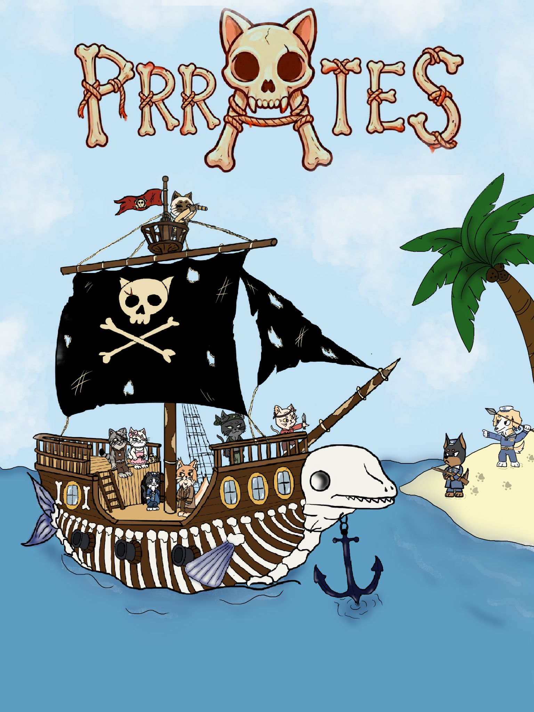

Se trata de un plataformas 2D, con combate y elementos metroidvania donde los protagonistas, gatos piratas, han de rescatar a los miembros de su tripulación y hacer uso de las habilidades individuales de cada uno para progresar a través de distintas zonas.
↝ Cada gato aporta al grupo su habilidad única.
↝ Hay variedad de personajes y unos roles claramente definidos.
↝ Los personajes interactúan entre sí para avanzar.
↝ Grupos de perros soldado pertenecientes a la marina.